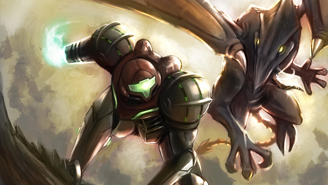
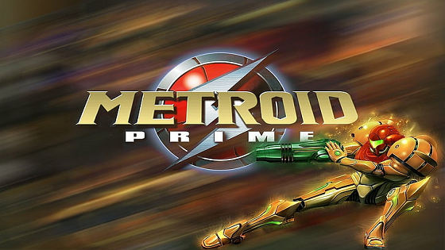
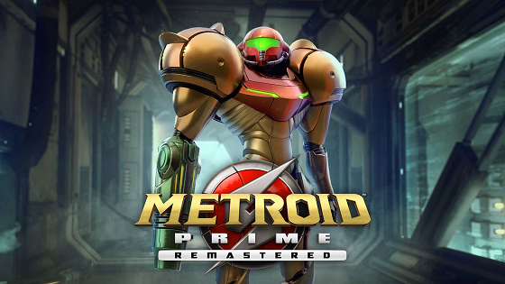
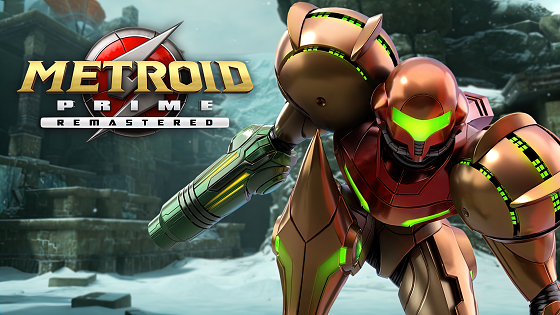
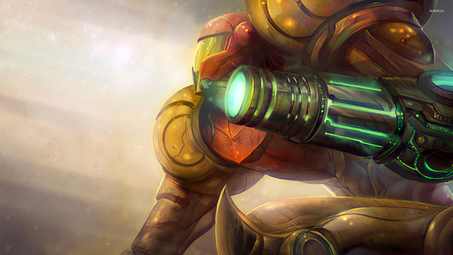

La historia sucede después de que Samus destruyera la base pirata en Zebes, aunque el tiempo exacto transcurrido sigue en debate. El actuar de Samus representó un duro golpe para la organización de los Piratas espaciales, quienes optaron por dividirse en dos grupos: uno dedicado a reconstruir la base en Zebes, y otro enviado a explorar las estrellas en busca de nuevas y potentes fuentes de energía. El segundo grupo, entonces, halló una fuerte emisión de energía en un planeta vecino de Zebes: Tallon IV. Tiempo después, Samus intercepta un mensaje de auxilio proveniente de la fragata pirata Orpheon.
|  |  |  |  |  |